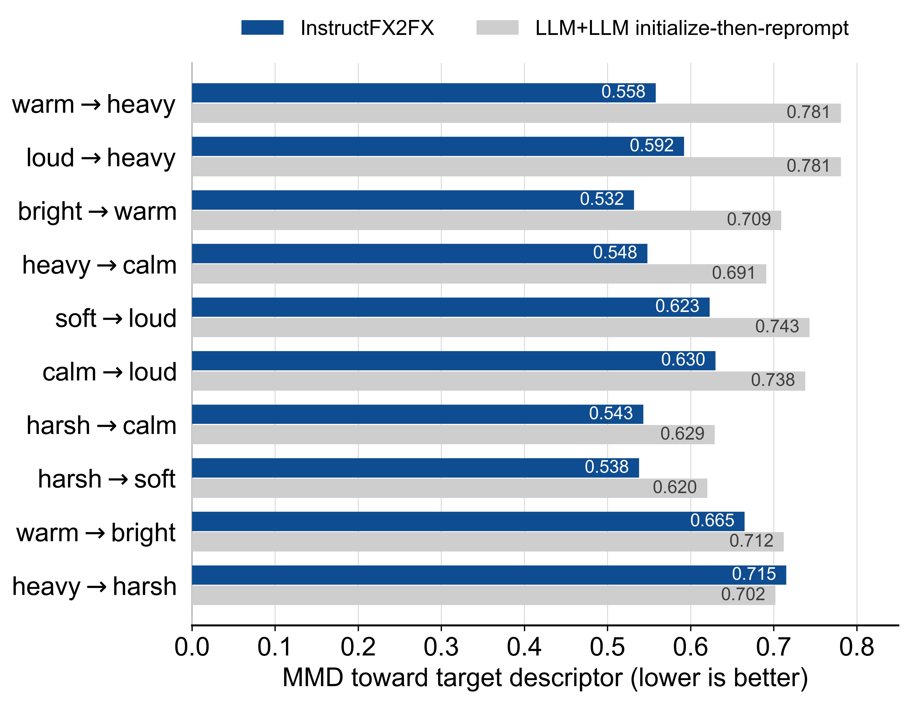
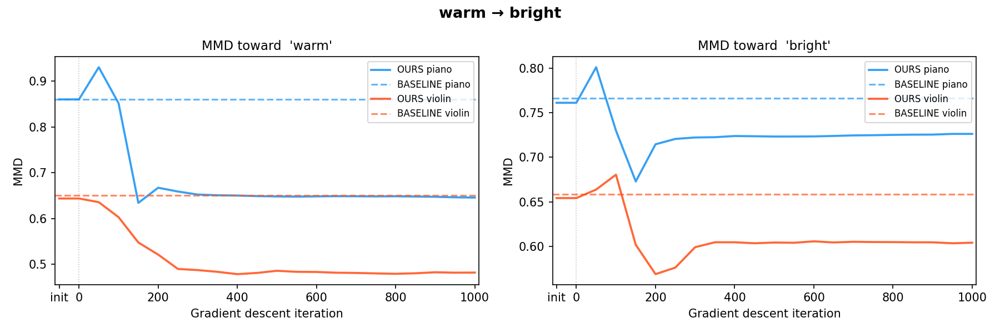
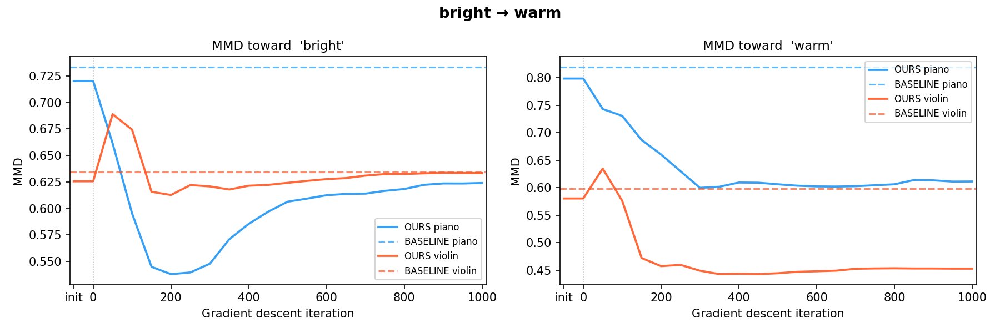
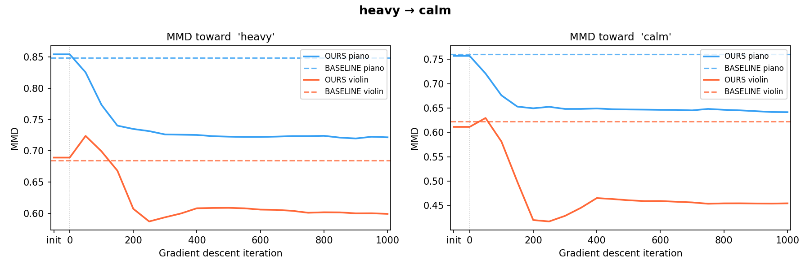
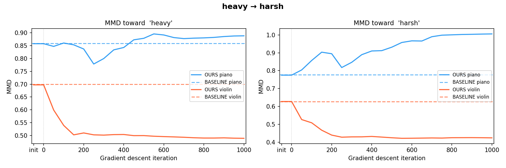
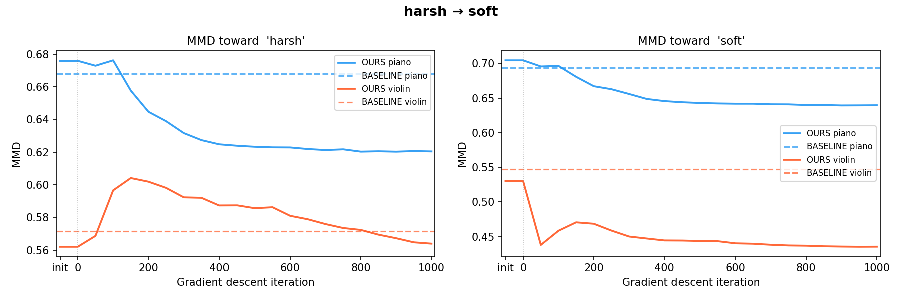
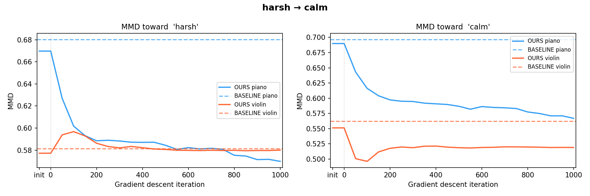
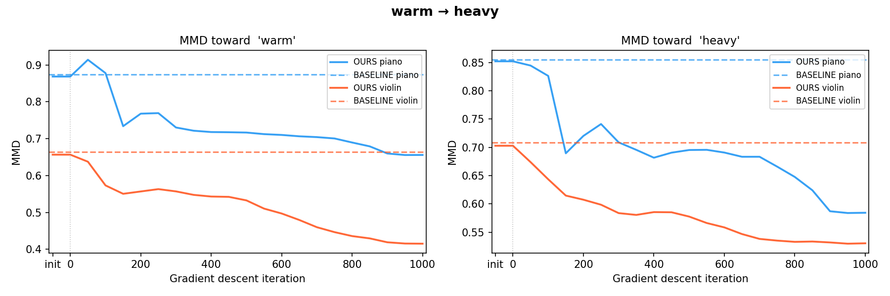
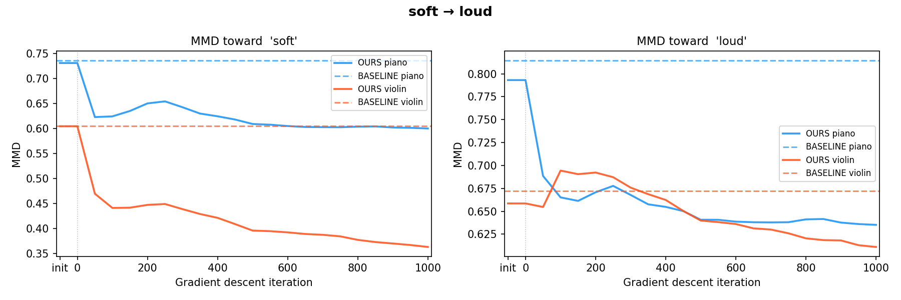
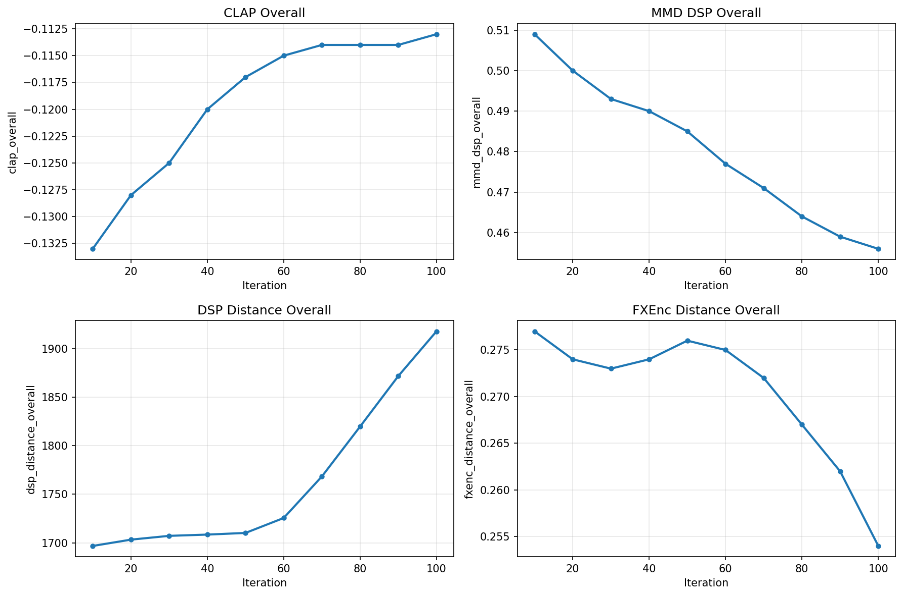

$ cat abstract.md
INSTRUCTFX2FX▮
A Multi-turn Text-to-Preset Demo for Iterative Audio Effect Refinement
$ problem
Given an existing FX parameter set P, how can a sequence of natural-language instructions {I₁, I₂, …} make the sound fit the user's need? We name this problem sequential FX refinement.
$ answer
This is why we propose InstructFX2FX. An LLM plans and orders the FX chain; CLAP-guided optimization then refines the parameters perceptually, turn after turn, keeping what earlier turns achieved.
$ routing — every instruction takes one of three modes
Initialize. Build a fresh FX chain when the instruction starts a new direction.
Extend. Reuse the current chain and add new effects on top of it.
Reuse & optimize. Keep the existing effects and re-tune their parameters in place.
Real sessions on the gradient-descent path (EQ & reverb). Each turn shows what Layer 1 planned, then plays the result. Click a waveform to seek, toggle dry / result to A/B, or drag the gradient-descent track to hear the optimization converge.
EXP.01 · SEQUENTIAL MMD

EXP.02 · MMD CONVERGENCE TRAJECTORY

warm → bright
bright → warm
heavy → calm
heavy → harsh
harsh → soft
harsh → calm
warm → heavy
soft → loud calm → loud
calm → loud loud → heavy
loud → heavyEXP.03 · LLM INITIALIZATION ABLATION

@misc{yu2026instructfx2fxmultiturntexttopresetdemo,
title = {InstructFX2FX: A Multi-turn Text-to-Preset Demo for
Iterative Audio Effect Refinement},
author = {Song-Ze Yu and Milan Liessens Dujardin and
Yuxuan Cai and Wantong Zhang},
year = {2026},
eprint = {2606.22005},
archivePrefix = {arXiv},
primaryClass = {cs.SD},
url = {https://arxiv.org/abs/2606.22005}
}